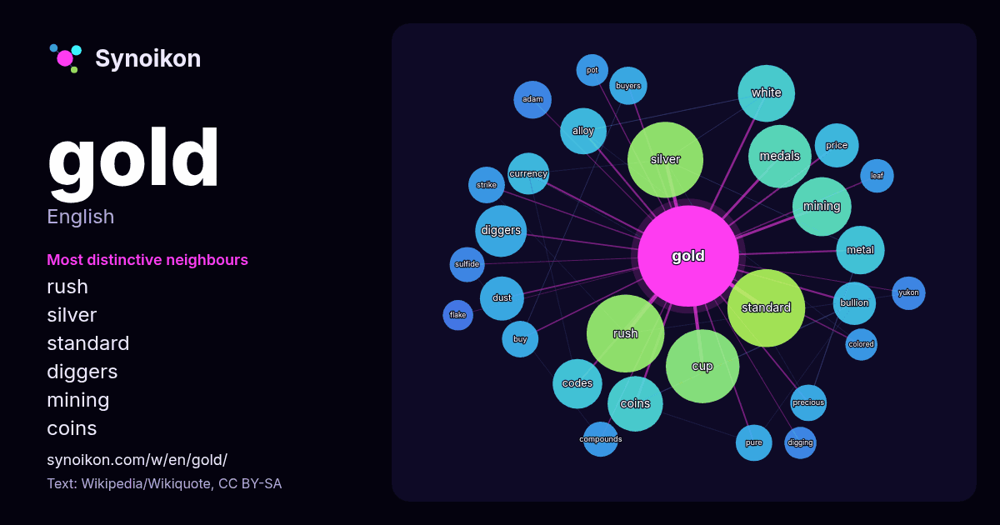

English · word of the day list
gold
The words found around it in 1818 instances from Wikipedia, Wikiquote, Hacker News.

Most distinctive neighbours
- rush 51×
- silver 33×
- standard 31×
- diggers 27×
- mining 26×
- coins 25×
- alloy 21×
- bullion 19×
- dust 18×
- medals 17×
- cup 16×
- currency 16×
- metal 15×
- codes 14×
- buyers 14×
- precious 13×
- sulfide 13×
- price 12×
- pure 12×
- adam 12×
× = how many times more often than in general Wikipedia text.
Most frequent neighbours
- rush 59
- standard 59
- american 58
- silver 56
- cup 53
- album 52
- born 43
- medals 39
- mining 34
- white 32
- british 30
- coins 30
- diggers 26
- film 25
- codes 24
- metal 23
- age 22
- black 22
- world 22
- alloy 21
In context
- Gold is a chemical element; its chemical symbol is Au (from Latin aurum) and atomic number 79. In its pure form, it is a bright-metallic-yellow, dense Wikipedia snippets · Gold
- GOLD may refer to: Gold (disambiguation) Gold, a chemical element Genomes OnLine Database Global-scale Observations of the Limb and Disk, a NASA Explorer Wikipedia snippets · GOLD
- A Gold code, also known as Gold sequence, is a type of binary sequence used in telecommunications (CDMA) and satellite navigation (GPS). Gold codes are Wikipedia snippets · Gold code
- A gold standard is a monetary system in which the standard economic unit of account is defined by a fixed quantity of gold. The gold standard was the basis Wikipedia snippets · Gold standard
- Gold, also called golden, is a color tone resembling the chemical element gold. The web color gold is sometimes referred to as golden to distinguish it Wikipedia snippets · Gold (color)
- The Gold Code is the launch code for nuclear weapons provided to the president of the United States in their role as commander-in-chief of the armed forces Wikipedia snippets · Gold Codes
- than love. Gold Digger, Gold Diggers or The Gold Diggers may refer to: The Gold Diggers (1923 film), a Warner Bros. silent film Gold Diggers of Broadway (1929 Wikipedia snippets · Gold Digger
- Andrew Maurice Gold (August 2, 1951 – June 3, 2011) was an American multi-instrumentalist, singer, songwriter, and record producer who influenced much Wikipedia snippets · Andrew Gold
More words
- art
- autumn
- bell
- bread
- bridge
- cat
- city
- climate
- clock
- death
- desert
- dog
- family
- food
- forest
- garden
- god
- health
- heart
- history
- honey
- horse
- island
- language
- life
- map
- mirror
- money
- mother
- mountain
- nature
- power
- rain
- road
- salt
- science
- shadow
- silence
- song
- star
- storm
- summer
- tea
- time
- train
- truth
- water
- winter
- work
Precomputed on 2026-10-09 with default settings (±5 words, medium corpus). The interactive map can refresh it with live data.